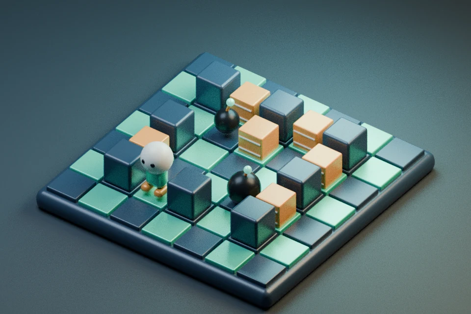

放弹库存反馈候选 · 装备栏显示可用弹数；本格有弹或容量已满时说明原因。可用不代表安全落点，先看撤离方向。离弹阻挡、连锁与引信不变。未实玩/听音。普通局与原两小关保留；普通成绩与静音独立，不读取或迁移旧记录；试炼不读写成绩。
先看撤离方向，再放炸弹。拆砖收字，清敌进门。
前两小关：无敌人 / 无升级 / 无短护 · 碰火结束
方向键 / WASD 移动；空格 / J 放弹；P 暂停；M 静音。手机使用屏幕按钮。
露出的字母下方，“先”表示当前目标，数字表示单词内的收集顺序。普通局拼完整词后可按 E 使用一次 2 秒短护；掉命失去未用短护，放弹仍须撤离。字母路线按阻隔与步距估算，不保证最安全或最优。
两种小关固定初级引信 2.1 秒、火力 2、容量 3。按 G → O 收集后进右下星门，可直接选择或入门成功后继续进阶。没有奖励带出。
MAP 试炼：一命、固定火力2，无升级、补给、短护、星级或计时奖励。三处标记砖藏 M / A / P，按序取齐、清两敌、回左上门才完成。
延时单弹：容量1，放置后2.1秒才能再次新按引爆，最迟4.2秒自动爆；过早按不排队。三枚定时容量3、引信2.1秒。两种装置火焰均自伤，连锁可提前爆。
试炼全程零成绩读写。首次页面仍读取本页声音偏好；显式静音仍会保存偏好。普通局结束继续按原规则读写原本地候选纪录键。

固定装备 · 一命 · 不记成绩 · 无道具 / 短护
按 M → A → P 取齐字母，清除两只巡逻敌人，再回左上星门。碰敌或火焰都会结束。
J / 空格 / 💣 都是行动键。放置与引爆须分别松开后新按；过早按不排队。火焰连锁可提前爆，不能回收。局中不能换装置。
MAP 试炼 · 仅本次过程 / 不记成绩
独立玩法实验 · 仅首次跨关
只影响第 1-2 轮；选定后仍领一次原补给。额外分须进门通关才结算，失败不发。敌人与地图规则不变，字少不保证安全。
远征补给 · 每轮选一项
只查看当前画面，不显示额外路线或隐藏信息。
可选小关 · 无纪录 / 无奖励带出
行动结束
本轮未通关